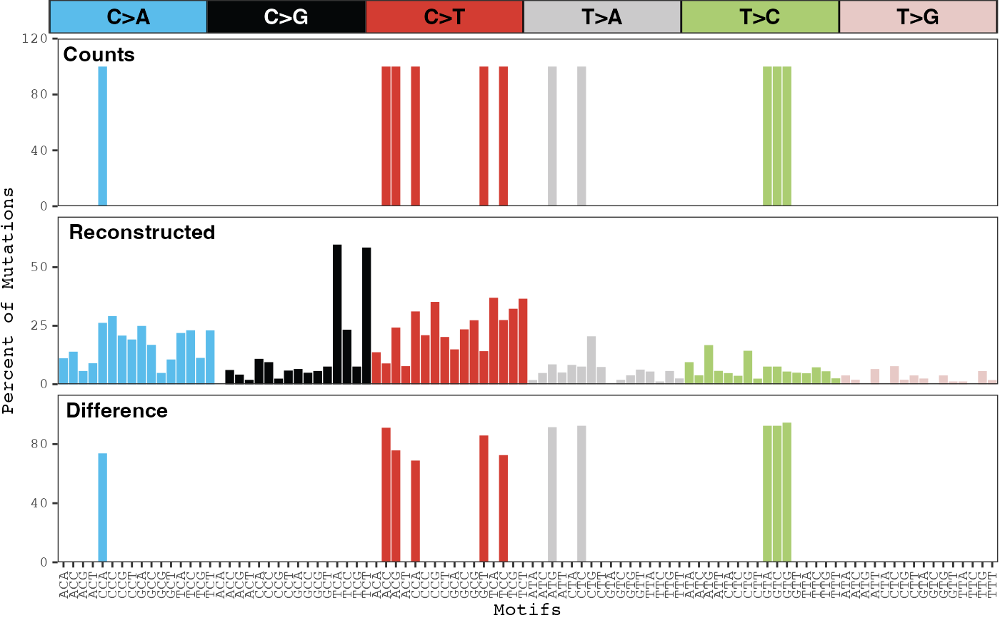

Plot reconstruction error for a sample
Source:R/plot_sample_reconstruction_error.R
plot_sample_reconstruction_error.RdDisplays the observed distribution of counts for each mutation type, the distribution of reconstructed counts for each mutation type using the inferred mutational signatures, and the difference between the two distributions.
Usage
plot_sample_reconstruction_error(
musica,
sample,
model_id,
modality = "SBS96",
result_name = "result",
plotly = FALSE
)Arguments
- musica
A
musicaobject.- sample
Name of the sample within the
musicaobject.- model_id
The name of the desired model.
- modality
The modality of the model. Must be "SBS96", "DBS78", or "IND83". Default
"SBS96".- result_name
Name of the result list entry containing desired model. Default
"result".- plotly
If
TRUE, the the plot will be made interactive usingplotly. DefaultFALSE.
Examples
data(res)
plot_sample_reconstruction_error(res, "TCGA-ER-A197-06A-32D-A197-08",
model_id = "res")
#> Warning: Removed 85 rows containing missing values or values outside the scale range
#> (`geom_bar()`).
